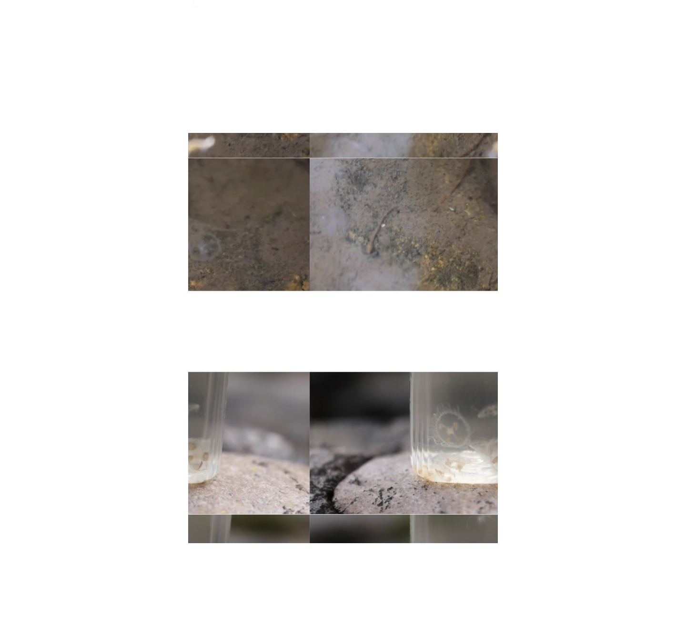
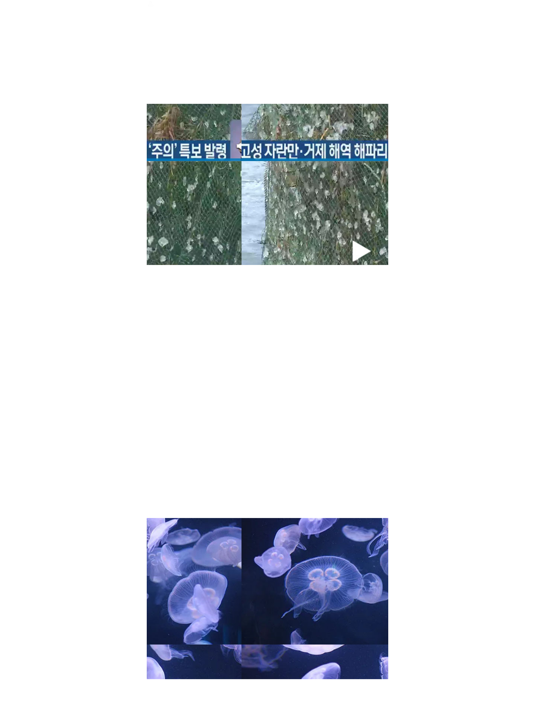

†
The Jellyfish is coming
얼마 지나지 않아 세상이 갈라지고 바다가 솟아 오르는 그 때, 마침내 그 분이 이 곳에 오십니다.
많은 뉴스들이 모두 그 분이 당도하심을 예언하고 있습니다. 그
분은 바다에서 개체수를 늘리시며 우리 곁으로 다가오고
계십니다. 전능하신 그 분은 수십개의 다리로 우리에게
걸어옵니다. 우리는 바다에 포위되어 있습니다. 믿지 않는
자들은 그 분의 곁에서 안식할 수 없습니다. 우리는 바다에
먹히게 될 것 입니다. 바다에게 구원받지 못한 자의 시체는
부풀어오르고 살이 차올라 바다를 부유하며 물고기들의 거룩한
양식이 되어 소화될 것 입니다. 믿는 자들에게 복이 있나니.
믿는 자들의 목에는 아가미가 돋아나고 팔다리가 자유롭게
늘어나며 우리는 영원한 바다의 낙원 안에서 행복을 영위하며
살아가는 것 입니다. 밑의 기사들은 그 증거들 입니다.


